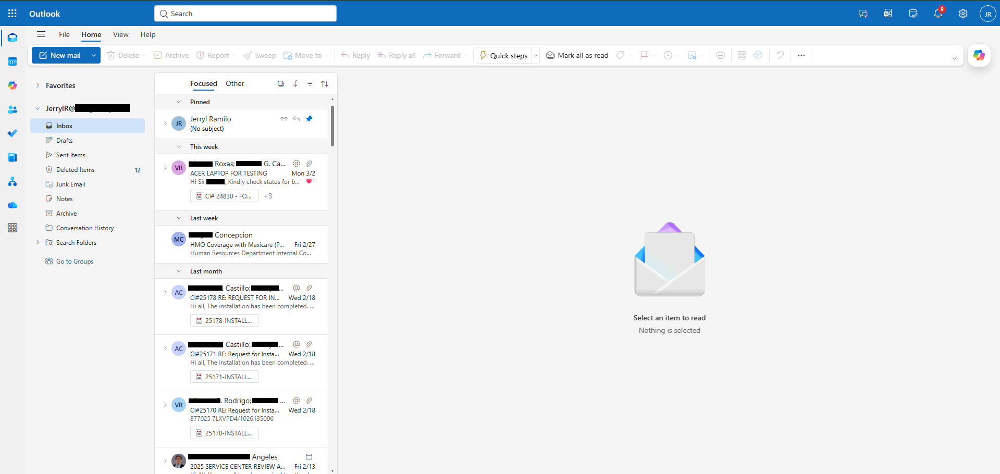
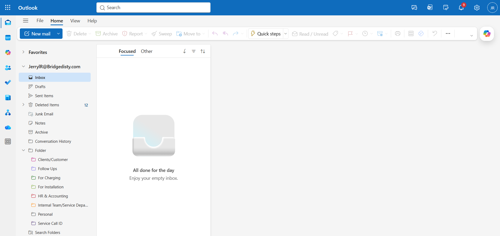
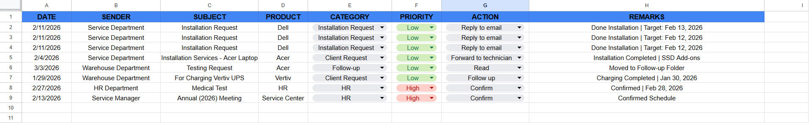

Project Overview
This project demonstrates my ability to manage and organize high-volume
email communication using a structured tracking system integrated with
Microsoft Outlook and a monitoring spreadsheet.
Operational Problem
Service operations receive multiple emails daily from different departments
such as Service, Warehouse, HR, and Clients. Without a structured system,
important requests such as installations, testing, charging schedules,
and internal announcements can be easily overlooked.
Solution
- Implemented a categorized email folder system in Microsoft Outlook
- Created a centralized email monitoring spreadsheet
- Standardized tracking columns for consistent documentation
- Assigned priority levels (Low / High)
- Recorded actions such as Reply, Follow-up, Forward, or Confirmation
Process Implementation
- Reviewed incoming emails daily through Outlook inbox
- Categorized emails into designated folders
- Encoded email details into the tracking sheet
- Assigned action items based on request type
- Maintained follow-up records and remarks for accountability
Results & Impact
- Improved visibility of incoming service requests
- Reduced risk of missed emails or delayed responses
- Created an organized monitoring system for daily operations
- Enabled quick reference for completed and pending tasks
Project Preview
Sample preview of the Email Management Tracking Sheet.



View Full File Structure